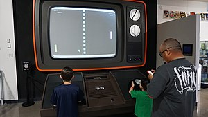
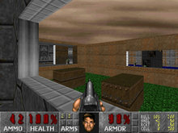

Video Games
Interactive Entertainement
A video game is an electronic game that involves interaction with a user interface or input device – such as a joystick, controller, keyboard, or motion sensing devices, to generate visual feedback for a player. This is then shown on a two- or three-dimensional video display device such as a TV set, monitor, touchscreen, or virtual reality headset. Video games are augmented with audio feedback from speakers or headphones, and optionally with other types of feedback systems including haptic technology.

(1) People playing a large scale version of the iconic Pong video game at the National Videogame Museum
Video games are defined based on their platform, which include arcade games, console games, and PC games. More recently, the industry has expanded onto mobile gaming through smartphones and tablet computers, virtual and augmented reality systems, and remote cloud gaming. Video games are classified into a wide range of genres based on their type of gameplay and purpose.
The first video games were simple extensions of electronic games using video-like output from large room-size computers in the 1950s and 1960s, while the first video games available to consumers appeared in 1971 through the release of the arcade game Computer Space, followed the next year by Pong, and with the first home console the Magnavox Odyssey in 1972. Today, video game development requires numerous skills to bring a game to market, including developers, publishers, distributors, retailers, console and other third-party manufacturers, and other roles.
Since the 2010s, the commercial importance of the video game industry has been increasing. The emerging Asian markets and mobile games on smartphones in particular are driving the growth of the industry. As of 2018, video games generated sales of US$134.9 billion annually worldwide, and were the third-largest segment in the U.S. entertainment market, behind broadcast and cable TV.

(2) Early 90s video games
Origins
Early games used interactive electronic devices with various display formats. The earliest example is from 1947—a "Cathode ray tube Amusement Device" was filed for a patent on 25 January 1947, by Thomas T. Goldsmith Jr. and Estle Ray Mann, and issued on 14 December 1948, as U.S. Patent 2455992. Inspired by radar display technology, it consisted of an analog device that allowed a user to control a vector-drawn dot on the screen to simulate a missile being fired at targets, which were drawings fixed to the screen. Other early examples include: Christopher Strachey's Draughts game, the Nimrod computer at the 1951 Festival of Britain; OXO a tic-tac-toe Computer game by Alexander S. Douglas for the EDSAC in 1952; Tennis for Two, an electronic interactive game engineered by William Higinbotham in 1958; Spacewar!, written by MIT students Martin Graetz, Steve Russell, and Wayne Wiitanen's on a DEC PDP-1 computer in 1961; and the hit ping pong-style Pong, a 1972 game by Atari. Each game used different means of display: NIMROD used a panel of lights to play the game of Nim, OXO used a graphical display to play tic-tac-toe. Tennis for Two used an oscilloscope to display a side view of a tennis court, and Spacewar! used the DEC PDP-1's vector display to have two spaceships battle each other.

(3) Early analog games
These preliminary inventions paved the way for the origins of video games today. Ralph H. Baer, while working at Sanders Associates in 1966, came up with the idea of using a control system to play a rudimentary game of table tennis on a television screen. With Sanders' blessing, Baer build out the prototype "Brown Box". Sanders patented Baer's inventions and licensed them to Magnavox, who commercialized it as the first home video game console, the Magnavox Odyssey, released in 1972. Separately, Nolan Bushnell and Ted Dabney, inspired by seeing Spacewar! running at Stanford University, came up with the idea of creating a similar version running in a smaller cabinet using a less expensive computer with a coin-operated feature. This was released as Computer Space, the first arcade game, in 1971. Bushnell and Dabney went on to form Atari, Inc., and with Allan Alcorn, created their second arcade game Pong in 1972, which was directly inspired by the table tennis game on the Odyssey. Sanders and Magnavox sued Atari on patent infringement over Baer's patents, but Atari settled out of court, paying for perpetual rights to the patents. Following their agreement, Atari went ahead with plans to make a home version of Pong, while was released by Christmas 1975. The success of the Odyssey and Pong, both as an arcade game and home machine, launched the video game industry. Both Baer and Bushnell have been given the title the "Father of Video Games" for their contributions.
Components of a video game
Platform
Video games require a platform, a specific combination of electronic components or computer hardware and associated software, to operate. The term system is also commonly used. Games are typically designed to be played on one or a limited number of platforms, and exclusivity to a platform is used as a competitive edge in the video game market. The list below is not exhaustive and excludes other electronic devices capable of playing video games such as PDAs and graphing calculators.
-
Computer game
- Home console
- Handheld console
- Arcade game
- Browser game
- Mobile game
- Cloud gaming
- Virtual reality
- Emulation